We can now start looking at the data and doing some basic exploratory analysis. There are a few simple charts about the data that make up the preliminary study at first. The graphic below illustrates how long games are. Bins with a width of 1 are used in the histogram to accurately depict game duration. As can be seen, most games run between 25 and 35 minutes on average, however some go on for much longer. Although the game is intended to last around thirty minutes, some intense matches may go as long as forty-five minutes. This dataset mostly confirms that, with the vast majority of the games fitting inside those parameters. From a development standpoint, it seems that game duration has been perfected.
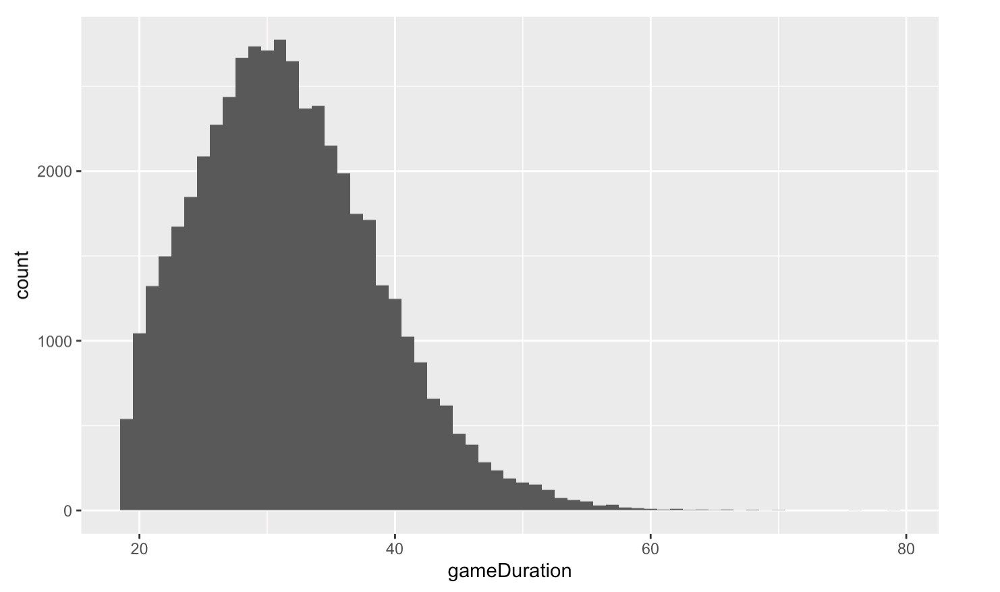A statistic known as first blood keeps track of which team was the first to remove a player from the other squad. Even though elimination is only temporary, it often gives a team a boost and raises their chances of victory when members from the other side are absent. It would be reasonable to assume that this statistic would be helpful in forecasting game results. The first blood graph demonstrates that the blue side wins somewhat more often. Although this may first seem strange, it is not reason for alarm since it doesn't seem the game's fairness is inherently flawed.
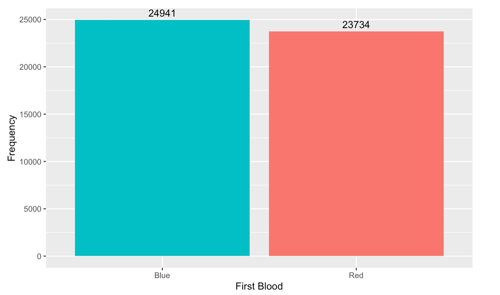First tower is a simple measure that tracks which team was the first to knock down a tower belonging to the other team out of the 11 towers that belong to each side. It is a measure that might be helpful in identifying which side is ahead in the early going. We can observe from this graph that the blue team destroys the first tower more often. Although it could be a matter of chance, developers need to take this into account to give gamers the impression that they have an equal chance. Since the game is always played from the same isometric perspective, it might be claimed that many players who have played the training mode (playing as the blue team) are more comfortable with the blue team layout (playing bottom left to top right).
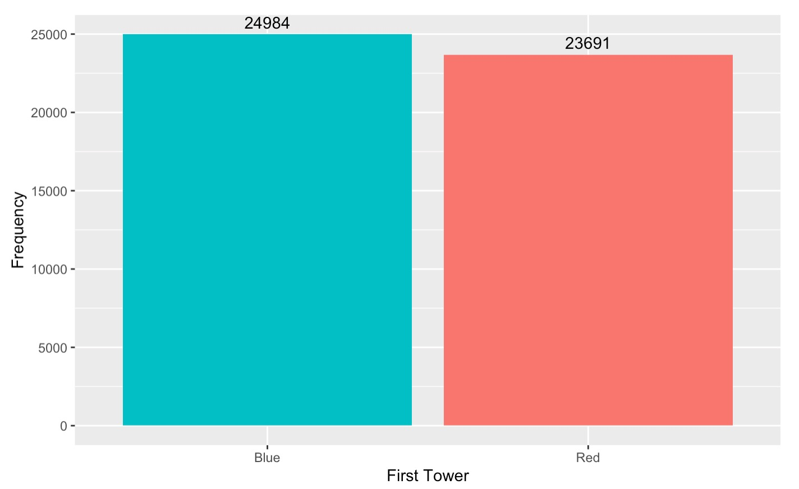The first inhibitor is comparable to the first tower data point, except instead of being the tower, it is the inhibitor, which is located deeper into each team's base and provides a stronger indication of who has the edge as the game progresses. There are no inhibitors removed in many of the games that are shown here. This indicates that the game has not been played all the way through but may be the result of a side giving up after gaining an enormous lead.
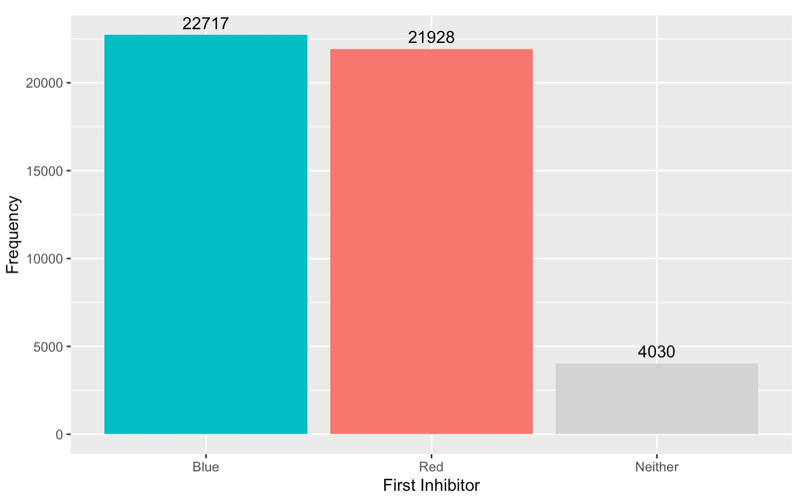 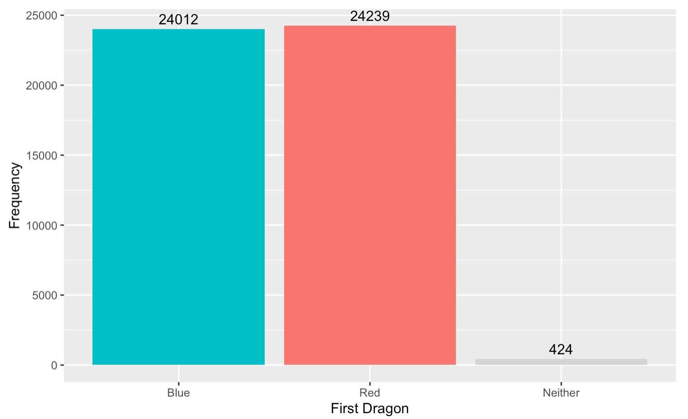The distribution of which team removed the first dragon is shown in the graph up top. It's interesting that both teams may attempt to complete this goal, which looks to be shared. It is also noteworthy that the red team had more eliminations than the blue team in first dragon, one of only two measures where this is true. This seems to be a random occurrence, although it is commonly known that dragons spawn off-center, thus it could be something to take into account for future advancements.
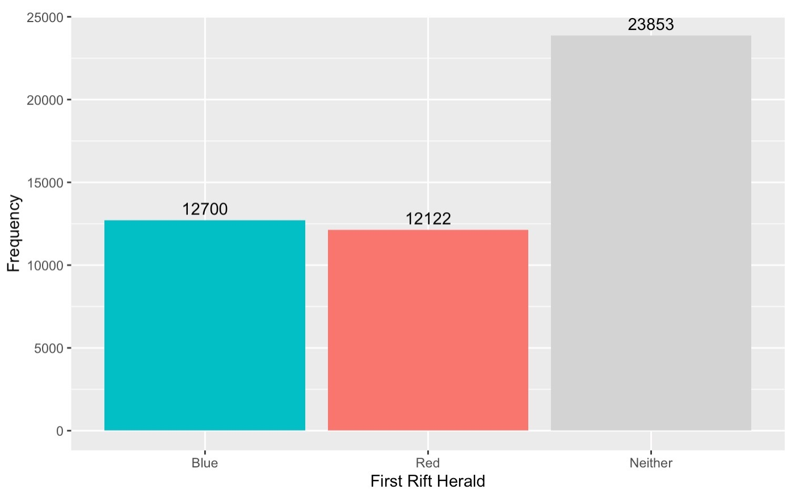 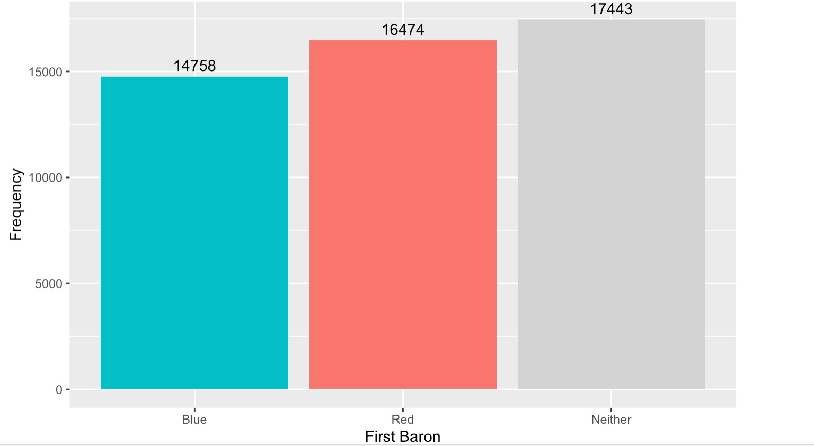The blue team seems to be edging out the red team, which is consistent with the patterns that most data suggest. The first rift herald also displays an astonishing number of matches in which neither side was able to destroy one. The game's rift herald is not there for the full duration; after the twenty-minute mark has been reached, the baron takes its place. However, considering that they seem to lose minimally in most other data, the red team does appear to remove the first baron often enough to justify inquiry.
Firstly, I extract the top five languages appeared in these tweets. This reflects the popularity of the game in these language used regions around the world from the side. So that is convenient for me to show that the following keywords appeared in the tweets, and then I can introduce the contrentration of the world championship. The third picture show that the support for 6 representative teams among the world championship this year.
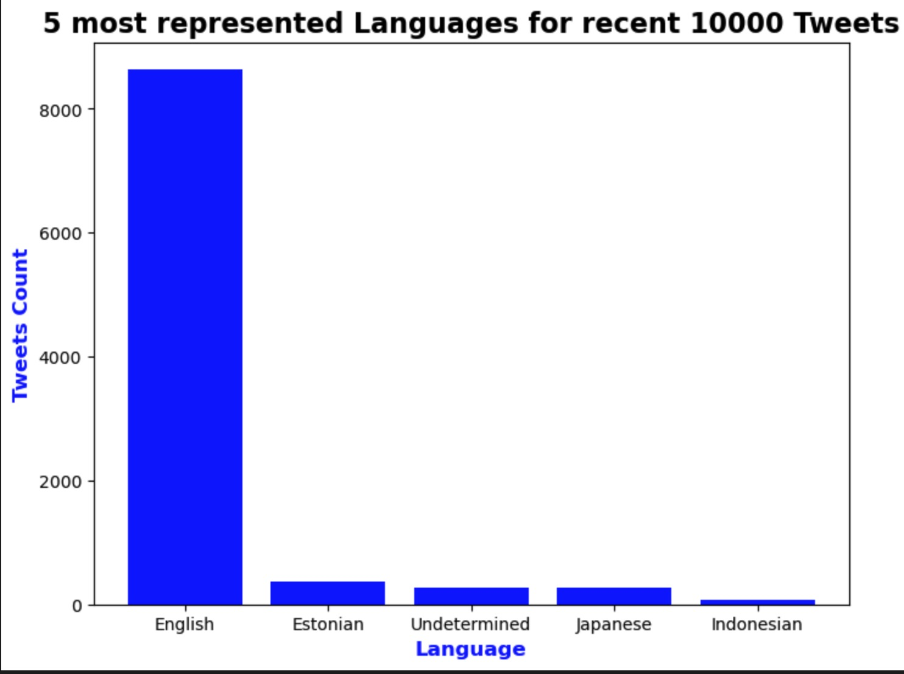 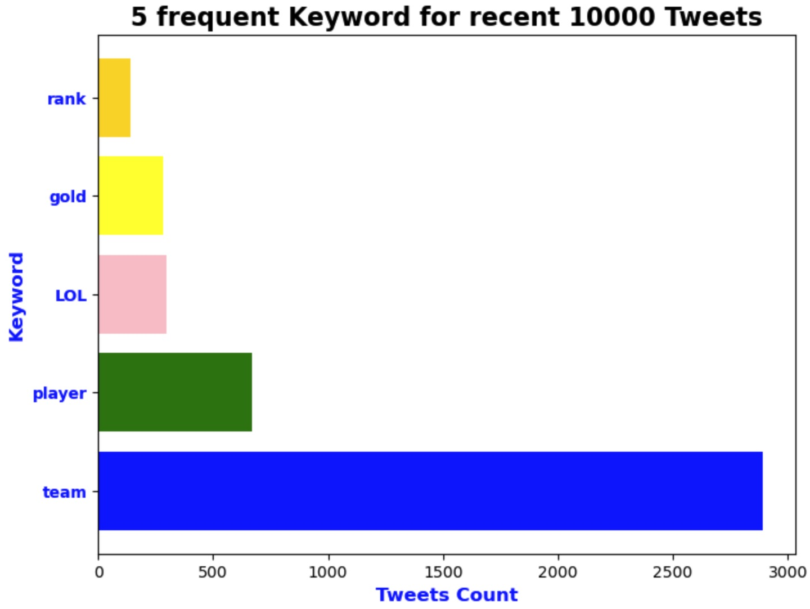 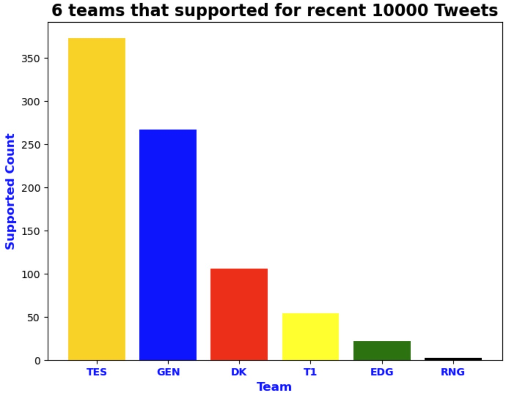Here we can see firstInhibitor's direct impact on choosing the winner. The outcomes are largely the same as those of the first inhibitor. We may argue that a side has a better chance of winning the game if they obtain the first baron. We could still see a clear correlation between the first riftherald and the likelihood of winning, even if the rate is smaller than the preceding ones. Consider them as a heatmap.
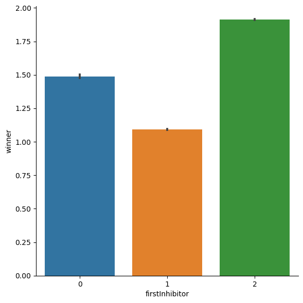 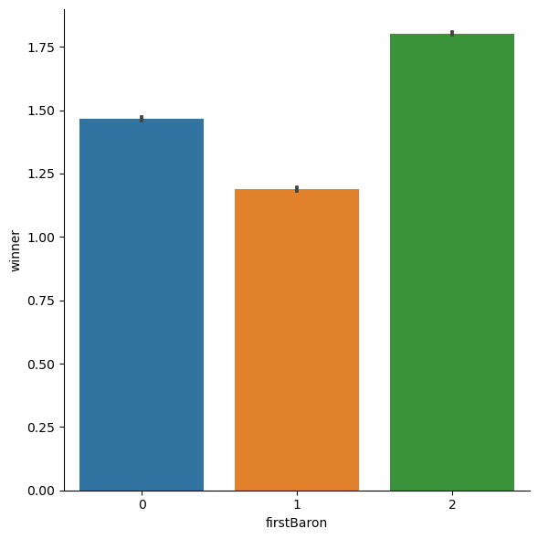 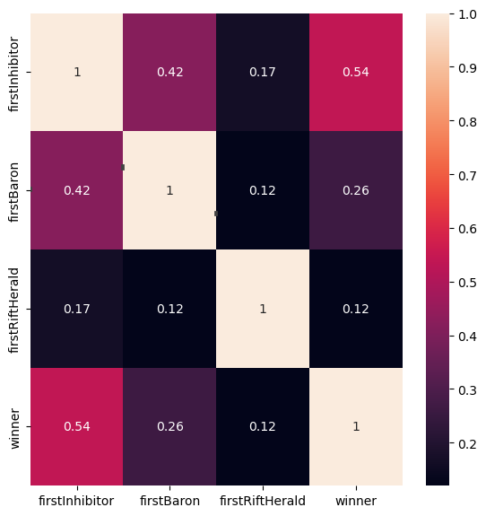